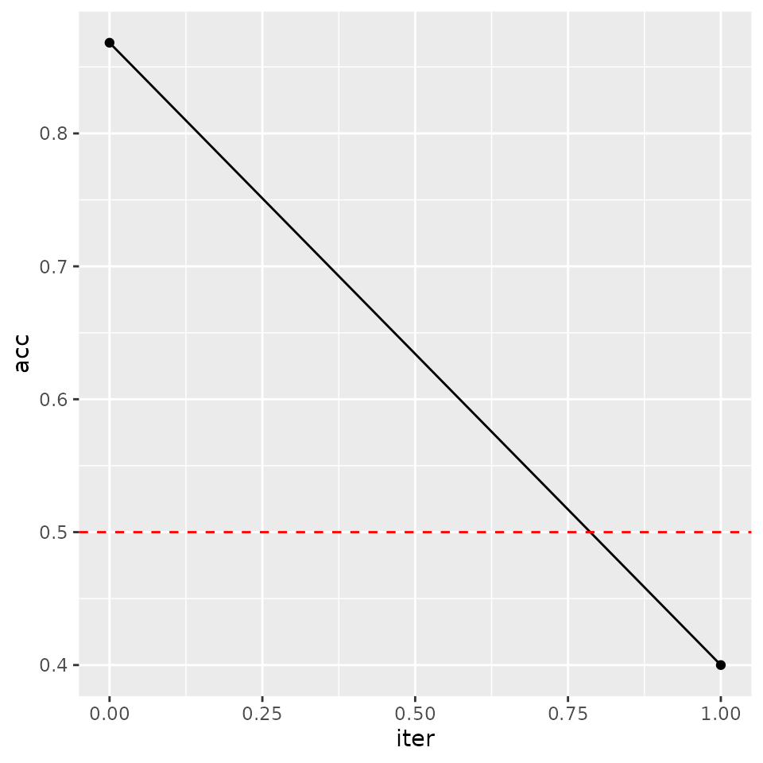

The first step of the arf pipeline is to fit an
adversarial random forest (ARF). The ARF algorithm is an iterative
procedure. In the first instance, we generate synthetic data by
independently sampling from the marginals of each feature and training a
RF to distinguish original from synthetic samples. If accuracy is
greater than \(0.5 + \delta\) (where
delta is a user-controlled tolerance parameter, generally
set to 0), we create a new dataset by sampling from the marginals within
each leaf and training another RF classifier. The procedure repeats
until original and synthetic samples cannot be reliably distinguished.
With the default verbose = TRUE, the algorithm will print
accuracy at each iteration.
# Load libraries
library(arf)
library(ggplot2)
# Train ARF
arf <- adversarial_rf(iris)
#> Iteration: 0, Accuracy: 82.94%
#> Warning: executing %dopar% sequentially: no parallel backend registered
#> Iteration: 1, Accuracy: 42.62%The printouts can be turned off by setting
verbose = FALSE. Accuracy is still stored within the
arf object, so you can evaluate convergence after the
fact.
# Train ARF with no print outs
arf <- adversarial_rf(iris, verbose = FALSE)
# Plot accuracy against iterations (model converges when accuracy <= 0.5)
tmp <- data.frame('acc' = arf$acc, 'iter' = seq_len(length(arf$acc)) - 1)
ggplot(tmp, aes(iter, acc)) +
geom_point() +
geom_path() +
geom_hline(yintercept = 0.5, linetype = 'dashed', color = 'red') 
We find a quick drop in accuracy following the resampling procedure, as desired. If the ARF has converged, then resulting splits should identify fully factorized leaves, i.e. subregions of the feature space where variables are locally independent.
For density estimation tasks, we recommend increasing the default
number of trees. We generally use 100 in our experiments, though this
may be suboptimal for some datasets. Likelihood estimations are not very
sensitive to this parameter above a certain threshold, but larger models
incur extra costs in time and memory. We can speed up computations by
registering a parallel backend, in which case ARF training is
distributed across cores using the ranger package. Much
like with ranger, the default behavior of
adversarial_rf is to compute in parallel if possible.
library(doParallel)
#> Loading required package: foreach
#> Loading required package: iterators
#> Loading required package: parallel
registerDoParallel(cores = 2)
arf <- adversarial_rf(iris, num_trees = 100)
#> Iteration: 0, Accuracy: 93.67%
#> Iteration: 1, Accuracy: 42%The result is an object of class ranger, which we can
input to downstream functions.
The next step is to learn the leaf and distribution parameters using forests for density estimation (FORDE). This function calculates the coverage, bounds, and pdf/pmf parameters for every variable in every leaf. This can be an expensive computation for large datasets, as it requires \(\mathcal{O}\big(B \cdot d \cdot n \cdot log(n)\big)\) operations, where \(B\) is the number of trees, \(n\) is sample size, and \(d\) is the data dimensionality. Once again, the process is parallelized by default.
params <- forde(arf, iris)Default behavior is to use a truncated normal distribution for
continuous data (with boundaries given by the tree’s split parameters)
and a multinomial distribution for categorical data. We find that this
produces solid results in a wide range of settings. You can also use a
uniform distribution for continuous features by setting
family = 'unif', thereby instantiating a piecewise constant
density estimator.
params_unif <- forde(arf, iris, family = 'unif')This method tends to perform poorly in practice, and we do not recommend it. The option is implemented primarily for benchmarking purposes. Alternative families, e.g. truncated Poisson or beta distributions, may be useful for certain problems; future releases will expand the range of options for this argument.
The forde function outputs a list of length 4, with
entries for (1) continuous features; (2) categorical features; (3) leaf
parameters; and (4) variable metadata.
params
#> $cnt
#> variable min max f_idx mu sigma
#> 1: Sepal.Length -Inf Inf 8 4.937500 0.21960375
#> 2: Sepal.Length -Inf Inf 7 4.657143 0.28199966
#> 3: Sepal.Length -Inf Inf 19 5.475000 0.15000000
#> 4: Sepal.Length -Inf Inf 18 5.433333 0.05773503
#> 5: Sepal.Length 5.35 Inf 9 5.666667 0.15275252
#> ---
#> 6312: Petal.Width -Inf Inf 1571 2.145455 0.25441555
#> 6313: Petal.Width -Inf Inf 1578 1.983333 0.23166067
#> 6314: Petal.Width -Inf Inf 1574 2.052941 0.30642627
#> 6315: Petal.Width 1.90 Inf 1568 2.100000 0.14142136
#> 6316: Petal.Width 1.95 Inf 1575 2.200000 0.17320508
#>
#> $cat
#> variable val prob f_idx
#> 1: Species setosa 1.0000000 8
#> 2: Species setosa 1.0000000 7
#> 3: Species setosa 1.0000000 19
#> 4: Species setosa 1.0000000 18
#> 5: Species setosa 1.0000000 9
#> ---
#> 1870: Species virginica 0.2857143 1579
#> 1871: Species virginica 0.3076923 1577
#> 1872: Species virginica 1.0000000 1568
#> 1873: Species virginica 0.2000000 1573
#> 1874: Species virginica 1.0000000 1575
#>
#> $forest
#> f_idx tree leaf cvg
#> 1: 1 1 20 0.03333333
#> 2: 2 1 22 0.03333333
#> 3: 3 1 31 0.02000000
#> 4: 4 1 40 0.08000000
#> 5: 5 1 41 0.02666667
#> ---
#> 1575: 1575 100 69 0.02000000
#> 1576: 1576 100 72 0.08000000
#> 1577: 1577 100 77 0.17333333
#> 1578: 1578 100 80 0.04000000
#> 1579: 1579 100 84 0.04666667
#>
#> $meta
#> variable class family
#> 1: Sepal.Length numeric truncnorm
#> 2: Sepal.Width numeric truncnorm
#> 3: Petal.Length numeric truncnorm
#> 4: Petal.Width numeric truncnorm
#> 5: Species factor multinomTo calculate log-likelihoods, we pass arf and
params on to the lik function, along with the
data whose likelihood we want to evaluate.
# Compute likelihood under truncated normal and uniform distributions
ll <- lik(arf, params, iris)
ll_unif <- lik(arf, params_unif, iris)
# Compare average negative log-likelihood (lower is better)
-mean(ll)
#> [1] 0.6705894
-mean(ll_unif)
#> [1] 5.956625Note that the piecewise constant estimator does considerably worse in this experiment.
Some words of caution
In this example, we have used the same data throughout. This may lead
to overfitting in practice. With sufficient data, it is preferable to
use a training set for adversarial_rf, a validation set for
forde, and a test set for lik. Alternatively,
we can set the oob argument to TRUE for either
of the latter two functions, in which case computations are performed
only on out-of-bag (OOB) data. These are samples that are randomly
excluded from a given tree due to the bootstrapping subroutine of the RF
classifier. Note that this only works when the dataset x
passed to forde or lik is the same one used to
train the arf. Recall that a sample’s probability of being
excluded from a single tree is \(e^{-1}
\approx 0.368\). When using oob = TRUE, be sure to
include enough trees so that every observation is likely to be OOB at
least a few times.
The default behavior of adversarial_rf is to treat
integers as ordered factors, with a warning. This makes sense for, say,
count data with limited support (e.g., number of petals on a plant).
However, this is probably not the desired behavior for other integer
variables. Consider the diamonds dataset, where
price is classed as an integer.
# Check data
head(diamonds)
#> # A tibble: 6 × 10
#> carat cut color clarity depth table price x y z
#> <dbl> <ord> <ord> <ord> <dbl> <dbl> <int> <dbl> <dbl> <dbl>
#> 1 0.23 Ideal E SI2 61.5 55 326 3.95 3.98 2.43
#> 2 0.21 Premium E SI1 59.8 61 326 3.89 3.84 2.31
#> 3 0.23 Good E VS1 56.9 65 327 4.05 4.07 2.31
#> 4 0.29 Premium I VS2 62.4 58 334 4.2 4.23 2.63
#> 5 0.31 Good J SI2 63.3 58 335 4.34 4.35 2.75
#> 6 0.24 Very Good J VVS2 62.8 57 336 3.94 3.96 2.48
# View the distribution
hist(diamonds$price)
This variable should clearly not be treated as a factor with 11602 levels. To make sure we fit a continuous density for price, we re-class the feature as numeric.
# Re-class
diamonds$price <- as.numeric(diamonds$price)
# Just taking first 100 observations as an example
arf <- adversarial_rf(diamonds[1:100, ])
#> Iteration: 0, Accuracy: 78.79%
#> Iteration: 1, Accuracy: 45.5%
# Fit density
params <- forde(arf, diamonds[1:100, ])
# Check distributional families
params$meta
#> variable class family
#> 1: carat numeric truncnorm
#> 2: cut ordered,factor multinom
#> 3: color ordered,factor multinom
#> 4: clarity ordered,factor multinom
#> 5: depth numeric truncnorm
#> 6: table numeric truncnorm
#> 7: price numeric truncnorm
#> 8: x numeric truncnorm
#> 9: y numeric truncnorm
#> 10: z numeric truncnormUsing family = 'truncnorm', the distribution for
price will now be modeled with a truncated Gaussian
mixture.